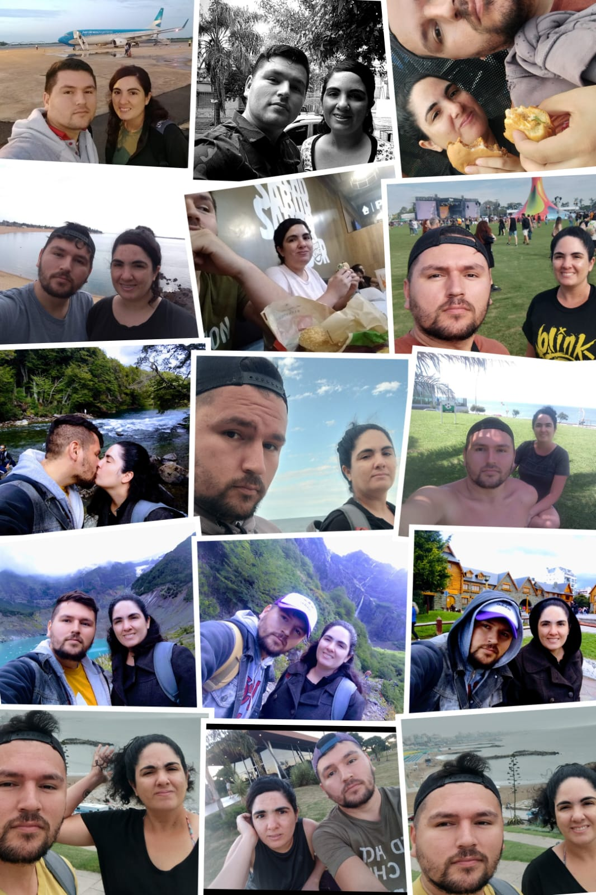
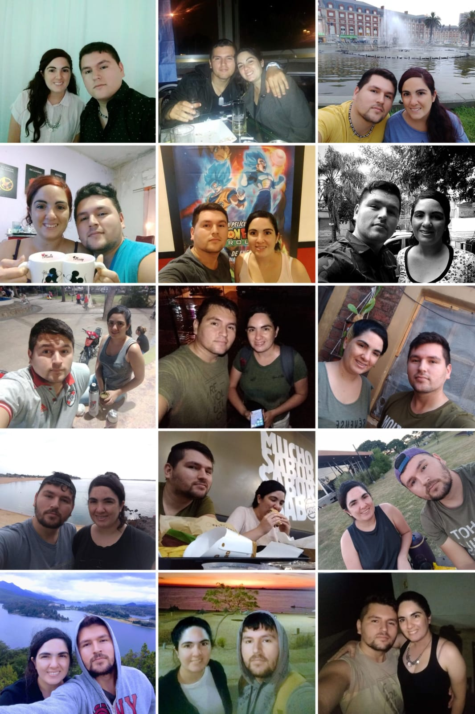

La Historia de Rodrigo y Maira
Sobre nosotros
Rodrigo y Maira se conocieron en un cálido día de junio de 2011. Fue uno de esos encuentros fortuitos, de los que parecen escritos por el destino. Ambos eran poco sociables y a menudo sentían que no encajaban en sus respectivos entornos. Esta sensación fue lo que inicialmente los unió. Él, con su carácter reservado, y ella, de caracter similar, se cruzaron en un curso que ambos tomaron de casualidad. La chispa no fue inmediata, pero Rodrigo cree que fue su amor compartido por System of a Down lo que hizo que Maira se fijara en él. Entre fiestas y reuniones, un día se dio ese primer beso en la fiesta de cumpleaños del hermano de ella.
El tiempo pasó, y el 31 de noviembre de 2011, Rodrigo se armó de valor y le pidió a Maira que fuera su novia. Ese día se convirtió en el inicio de una historia llena de aventuras, altos y bajos, risas y lágrimas. Al empezar la relación, muchos dudaban de su duración, pero ellos estaban decididos a demostrar lo contrario.
Uno de los destinos favoritos de ella era Mar del Plata, donde, con tal de verla feliz, él la acompañaba. Cuando viajaban en vacaciones de verano, solían disfrutar de sus playas y paseos marítimos, donde visitaban amigos y familiares. El resto del año trabajaban, estudiaban y disfrutaban el tiempo juntos. A pesar de las muchas peleas que surgieron entre ellos, siempre lograban reconciliarse, fortaleciendo su relación.
Un verano, decidieron hacer un viaje en auto a Bariloche. La emoción era palpable mientras recorrían las rutas argentinas. Sin embargo, la aventura no estuvo exenta de problemas: en medio del camino, se perdieron y el auto tuvo desperfectos mecanicos. Pensaron en regresar, pero decidieron arriesgarse y continuar. A pesar de los desafíos, disfrutaron de su estadía en Bariloche, explorando sus paisajes y viviendo momentos inolvidables. Al regresar, los problemas parecían seguirlos, pero su amor y determinación los mantuvieron unidos. Llegaron sanos y salvos a casa, y la mamá de Maira, con su característico sentido del humor, comentó: "¡Y con olor rico!".
Juntos, cumplieron muchos de sus sueños. Visitaron el Monumental, el estadio que Rodrigo siempre había querido ver. También asistieron a Lollapalooza, un sueño para Maira, donde disfrutaron de la presentación de Blink-182, su banda favorita. Rodrigo, por su parte, se deleitó viendo a The Offspring, una de sus bandas preferidas.
Sin embargo, en 2023, un nuevo desafío se presentó en sus vidas. Maira consiguió un trabajo que la mantuvo alejada de Rodrigo. La distancia física fue difícil de sobrellevar, pero el amor que se tenían los mantuvo unidos. A pesar de estar separados, seguían enamorados, esperando el día en que pudieran estar juntos nuevamente.
Rodrigo y Maira son el claro ejemplo de que el amor verdadero puede superar cualquier obstáculo. Su historia es un testimonio de perseverancia, aventuras compartidas y la fuerza de un amor que perdura a través del tiempo y la distancia.
Esta es la historia de un amor inesperado entre dos almas que nunca pensaron encontrarse. Sin buscarlo, se enamoraron profundamente, y hoy su amor brilla con la misma intensidad que el primer día en que se declararon su cariño. Basada en hechos reales, deseamos que esta historia tenga un final feliz para estas dos personas que tanto se merecen lo mejor en la vida.